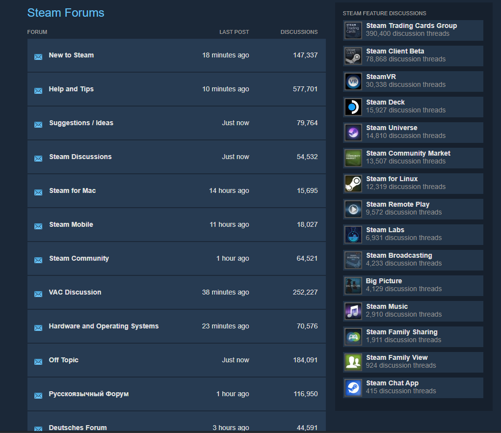
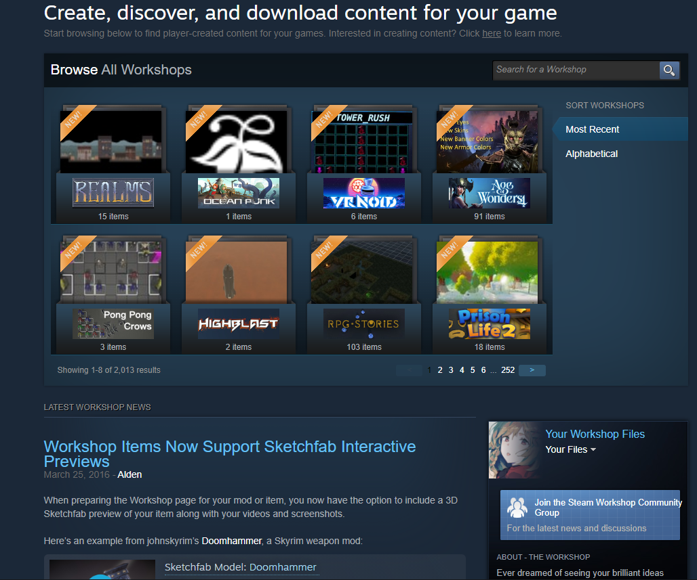
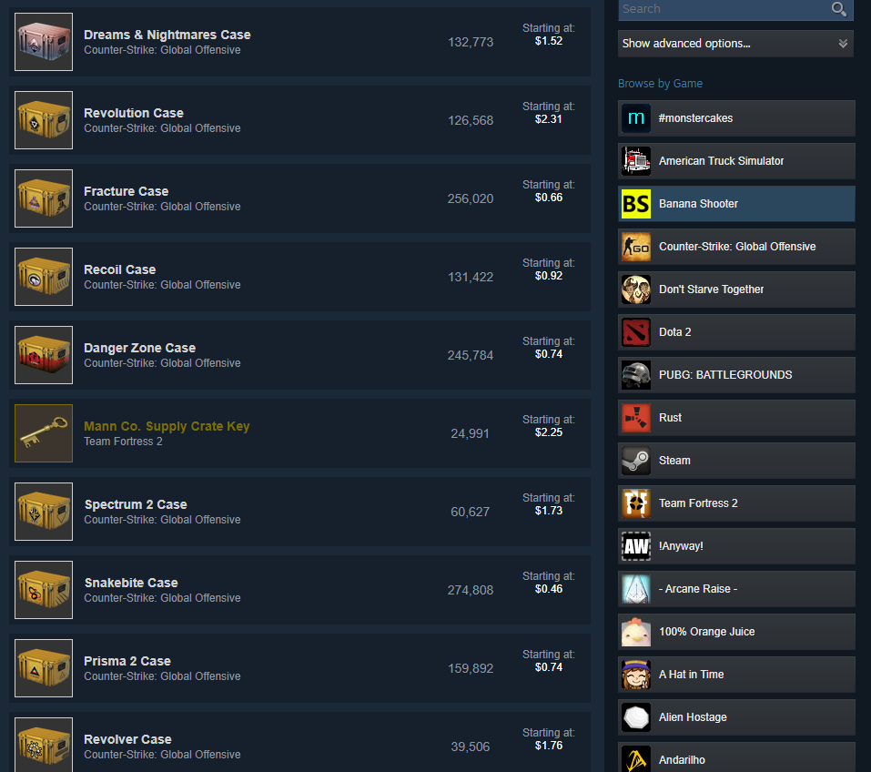
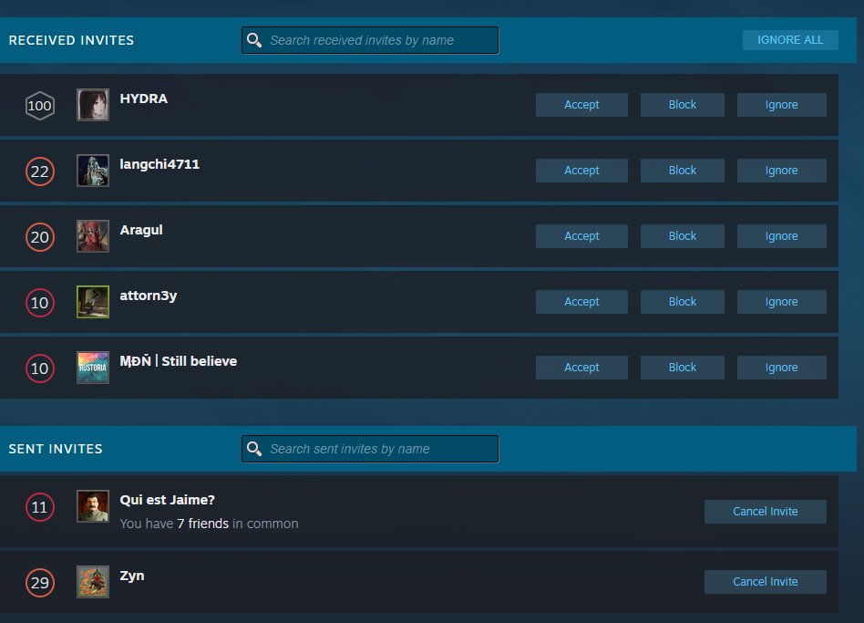

Steam is comprised of a community section. Here, users can interact with developers, creators, and other people. This is pretty much a built-in forums for users to toil with within created groups. However, these groups allow users to create rascist and controverial groups, that cause issues amongst different minorities (ussually are children being immature).Steam's community also provides a workshop for users to create artwork and assets for games they like. The steam community also provides users with a community market, where they can sell digital items from games they own. This trading system on Steam allows economy to flow within a game. Because of the loose restrictions on trading, it allows for scamming to happen. The image below is my friends list. People are constantly trying to add me so they can steam my expensive game items.
   